학습 목표 (Learning Objectives)
- ✓해수의 물리적·화학적 성질(수온, 염분, 밀도, 용존 기체)의 정의와 변화 요인을 설명할 수 있다.
- ✓실측 자료와 수온-염분도(T-S 다이어그램)를 활용하여 해수의 온도, 염분, 밀도, 용존 산소량 등의 분포를 분석·해석할 수 있다.
핵심 개념 체크리스트
학습을 마친 개념은 직접 체크해보세요!
2026 사대부고 고2 지구과학 자체 교재 원문 기반
동기 유발 · 생각해보기
수업 시작 전 핵심 질문
Q. 아라비아 반도 북서부에 있는 호수인 사해(Dead Sea)는 사람이 들어가면 구명조끼 없이도 자연스럽게 몸이 뜬다고 한다. 그 이유는 무엇일까?
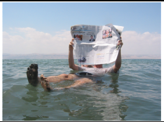

💡 먼저 스스로 이유를 추론해 본 뒤 버튼을 눌러 확인해보세요!
✨ 과학적 해설 및 모범 답안
사해는 건조한 기후로 인해 증발량이 강수량보다 매우 많고 외부로 빠져나가는 물길이 없어 염분이 일반 해수(약 35 psu)보다 약 8~9배 높은 300 psu 내외에 달합니다. 염분이 높을수록 해수의 밀도(단위 부피당 질량)가 커지므로 사람 몸의 밀도보다 물의 밀도가 훨씬 커져 큰 부력을 받아 몸이 자연스럽게 뜨게 됩니다.
수치 시뮬레이션
🧪 수온·염분 변화에 따른 해수 밀도(T-S) 및 부력 실시간 계산기
수온(0~30℃)과 염분(20~40 psu 및 사해 300 psu)을 조절하여 해수의 밀도 계산과 부력 상태, T-S도 상의 위치를 확인해보세요.
수치 시뮬레이션
EOS-80 표준 근사식
해수 밀도 & 부력 인터랙티브 시뮬레이터
수온 (T)
15.0 ℃
0℃ (극지)15℃ (중위도)35℃ (적도)
염분 (S)
35.0 psu
20 psu (담수유입)35 psu (평균)45 psu (고염분)
계산된 해수 밀도 (Density)
1.02598 g/cm³
시그마-t (σ_t): 25.98 kg/m³
⚖️
침강 경향: 중간 (안정 상태)
수온이 낮고 염분이 높을수록 등밀도선 오른쪽 아래로 이동하여 밀도가 증가하며, 극지역에서는 침강하여 심층수를 형성합니다.
핵심 개념 1
1. 해수의 수온 (Water Temperature)
(1) 전 세계 해양의 표층 수온 분포
- •수온의 정의: 해수의 온도 (단위: $\text{℃}$)
- •등수온선 분포: 태양 복사 에너지의 영향으로 등수온선은 주로 위도와 나란하게 분포한다.
- •위도에 따른 변화: 지구가 구형이기 때문에 저위도에서 고위도로 갈수록 단위 면적당 입사하는 태양 복사 에너지양($E$)이 감소하여 표층 수온이 대체로 낮아진다.
- •예외 요인: 대륙과 해양의 지형 분포, 바람, 한류·난류 등 해류의 영향이 더해져 등수온선이 위도와 완전히 나란하지 않고 연안에서 휘어진다.
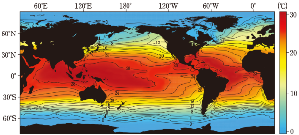
" class="max-h-72 w-auto object-contain rounded-lg group-hover:scale-[1.02] transition duration-300 cursor-zoom-in" onclick="openLightbox(this.src, '교재 그림: <전 세계 해양의 표층 수온 분포>')" loading="lazy" />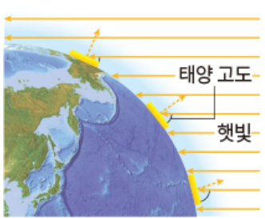
" class="max-h-72 w-auto object-contain rounded-lg group-hover:scale-[1.02] transition duration-300 cursor-zoom-in" onclick="openLightbox(this.src, '교재 그림: <위도에 따른 태양 복사 에너지의 양>')" loading="lazy" />(2) 해수의 연직 수온 분포 (층상 구조)와 위도별 비교
- •해수는 태양 복사 에너지의 도달 깊이와 바람의 혼합 작용에 의해 깊이에 따라 혼합층 - 수온약층 - 심해층의 3층 구조를 이룬다.
- •저위도 해역: 태양 복사 에너지 흡수량이 많아 표층 수온이 매우 높으나, 바람(무역풍·적도 무풍대)이 약해 혼합층이 얇고 수온약층이 뚜렷하게 발달한다.
- •중위도 해역: 강한 바람(편서풍)이 불어 혼합층의 두께가 가장 두껍게 나타나며 계절에 따른 수온 변화가 크다.
- •고위도 해역: 태양 복사 에너지가 적어 표층 수온이 매우 낮고, 표층과 심층의 수온 차이가 거의 없어 층상 구조(혼합층·수온약층)가 발달하지 않는다.
| 층 구분 | 깊이에 따른 수온 변화 | 생성 원인 및 핵심 특징 |
|---|---|---|
| 혼합층 | 수온이 높고 깊이에 따라 거의 일정함 | • 태양 복사 에너지 흡수 + 바람의 혼합 작용 • 바람이 강할수록 두껍게 발달 (중위도에서 가장 두꺼움) |
| 수온약층 | 깊어질수록 수온이 급격히 낮아짐 | • 아래쪽은 차갑고(고밀도) 위쪽은 따뜻하여(저밀도) 대류(연직 운동)가 일어나지 않는 매우 안정한 층 • 혼합층과 심해층 사이의 물질과 에너지 교환을 차단 |
| 심해층 | 수온이 매우 낮고(4℃ 이하) 일정함 | • 태양 복사 에너지가 도달하지 못함 (위도·계절에 관계없이 연중 수온 일정) • 전체 해수 부피의 약 80% 이상으로 가장 많은 양 차지 |
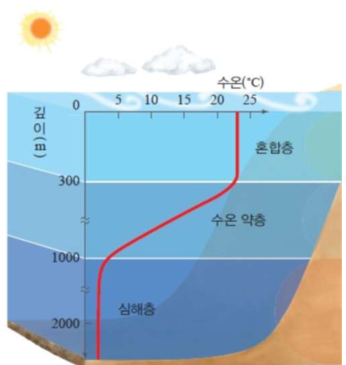
" class="max-h-72 w-auto object-contain rounded-lg group-hover:scale-[1.02] transition duration-300 cursor-zoom-in" onclick="openLightbox(this.src, '교재 그림: <깊이에 따른 해수의 층상 구조>')" loading="lazy" />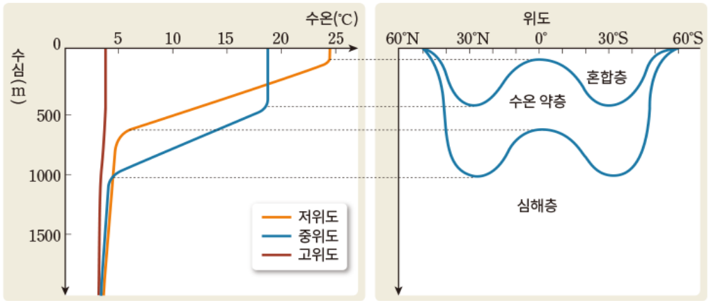
" class="max-h-72 w-auto object-contain rounded-lg group-hover:scale-[1.02] transition duration-300 cursor-zoom-in" onclick="openLightbox(this.src, '교재 그림: <위도별 해수의 연직 수온 분포 비교>')" loading="lazy" />
핵심 개념 2
2. 해수의 염분 (Salinity)
(1) 염분의 정의와 염분비 일정 법칙
- •염분의 정의: 해수 $1\text{ kg}$($1,000\text{ g}$) 속에 녹아 있는 모든 염류의 총량을 $\text{g}$ 수로 나타낸 값 (단위: $\text{psu}$, 실용염분단위)
- •전 세계 평균 염분: 전 세계 해양의 평균 표층 염분은 약 $35\text{ psu}$이다. (해수 $1\text{ kg}$ 중 물 $965\text{ g}$ + 염류 $35\text{ g}$)
- •⭐ 염분비 일정의 법칙 (매우 중요): 해역에 따라 해수의 염분(절대적인 염류의 총량)은 다르더라도, 해수가 오랫동안 순환하며 섞였기 때문에 녹아 있는 각 염류(염화 나트륨 약 77.7%, 염화 마그네슘 약 10.9% 등) 사이의 상대적인 비율은 전 세계 어느 바다에서나 항상 일정하다.
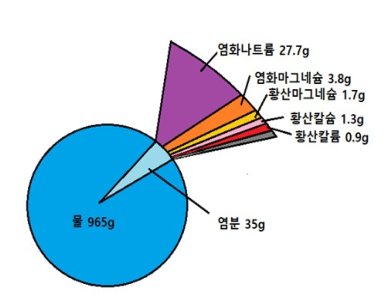
" class="max-h-72 w-auto object-contain rounded-lg group-hover:scale-[1.02] transition duration-300 cursor-zoom-in" onclick="openLightbox(this.src, '교재 그림: <해수 1kg 속의 염류의 양과 비율>')" loading="lazy" />(2) 표층 염분을 변화시키는 요인
- •증발량과 강수량 (가장 큰 영향 요인): 표층 염분은 $(\text{증발량} - \text{강수량})$ 값에 비례한다.
▸ 적도 해역: 저기압대(적도 수렴대)로 구름이 많고 강수량이 증발량보다 많아 염분이 낮다.
▸ 중위도(위도 약 $20^\circ\sim 30^\circ$) 해역: 아열대 고기압대에 위치하여 날씨가 맑고 건조하므로 증발량이 강수량보다 훨씬 많아 표층 염분이 가장 높다. - •하천수의 유입과 강수: 강물이 많이 흘러드는 대륙 연안 해역은 중심부 바다(외해)보다 표층 염분이 낮다.
- •해수의 결빙과 해빙 (극지방):
▸ 결빙(바닷물이 얼 때): 순수한 물($\text{H}_2\text{O}$)만 얼음으로 얼고 염류는 주변 바닷물로 빠져나오므로 주변 해수의 염분이 높아진다.
▸ 해빙(빙하/해빙이 녹을 때): 순수한 담수가 바다로 공급되므로 주변 해수의 염분이 낮아진다.
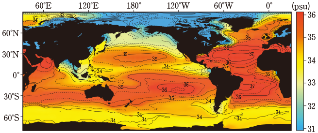
" class="max-h-72 w-auto object-contain rounded-lg group-hover:scale-[1.02] transition duration-300 cursor-zoom-in" onclick="openLightbox(this.src, '교재 그림: <전 세계 해양의 표층 염분 분포>')" loading="lazy" />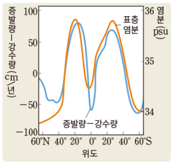
" class="max-h-72 w-auto object-contain rounded-lg group-hover:scale-[1.02] transition duration-300 cursor-zoom-in" onclick="openLightbox(this.src, '교재 그림: <(증발량 - 강수량)과 표층 염분 관계 그래프>')" loading="lazy" />
핵심 개념 3
3. 해수의 밀도와 수온-염분도 (T-S 다이어그램)
(1) 해수의 밀도 결정 요인과 분포
- •밀도의 변화 요인: 해수의 밀도는 수온이 낮을수록(반비례), 염분이 높을수록(비례), 수압이 클수록(비례, 영향 작음) 커진다.
- •위도별·수심별 분포: 일반적으로 표층 해수의 밀도는 표층 수온 분포와 거의 정반대 개형을 보이며(대칭형), 깊이에 따른 밀도 분포는 수온 분포와 대칭되어 수온약층 구간에서 밀도가 급격히 증가하는 밀도약층이 나타난다.
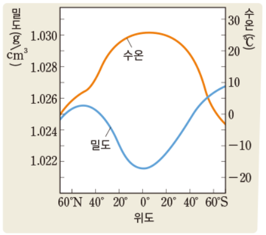
" class="max-h-72 w-auto object-contain rounded-lg group-hover:scale-[1.02] transition duration-300 cursor-zoom-in" onclick="openLightbox(this.src, '교재 그림: <위도별 표층 수온과 표층 밀도 분포>')" loading="lazy" />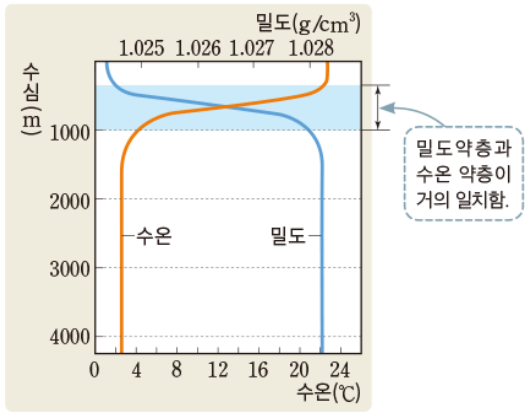
" class="max-h-72 w-auto object-contain rounded-lg group-hover:scale-[1.02] transition duration-300 cursor-zoom-in" onclick="openLightbox(this.src, '교재 그림: <수심에 따른 해수의 수온과 밀도 분포>')" loading="lazy" />(2) 수온-염분도 (T-S 다이어그램)와 수괴 분석
- •수괴(Water Mass): 대기의 '기단'과 마찬가지로 물리·화학적 성질(수온, 염분)이 비슷한 거대한 해수 덩어리
- •T-S도 해석 핵심: 세로축은 수온($T$), 가로축은 염분($S$), 오른쪽 아래로 내려갈수록 커지는 대각선 곡선은 등밀도선을 나타낸다. 즉, 오른쪽 아래(저온·고염분)로 갈수록 밀도가 크다!
- •두 수괴의 혼합: 성질이 다른 두 수괴 $A$와 $C$가 같은 양으로 혼합되면, T-S도에서 두 점을 이은 직선 선분의 중점에 해당하는 새로운 수온·염분·밀도를 가진 혼합 해수가 형성된다.
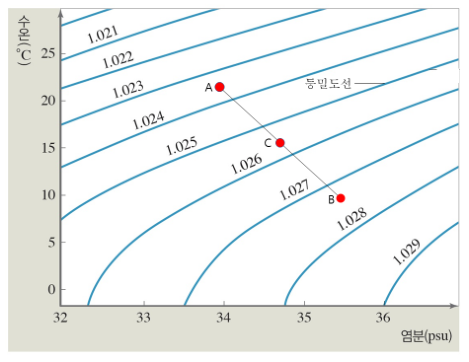
" class="max-h-72 w-auto object-contain rounded-lg group-hover:scale-[1.02] transition duration-300 cursor-zoom-in" onclick="openLightbox(this.src, '교재 그림: <수온-염분도(T-S 다이어그램)를 이용한 수괴 밀도 및 혼합 분석>')" loading="lazy" />
핵심 개념 4
4. 해수의 용존 기체 (Dissolved Gases)
(1) 기체의 용해도와 수심에 따른 O₂ · CO₂ 분포
- •기체의 용해도 조건: 해수에 녹아 있는 기체(질소, 산소, 이산화 탄소 등)의 용해도는 수온이 낮을수록, 염분이 낮을수록, 수압이 높을수록 커진다.
- •용존 산소량($\text{O}_2$) 연직 분포:
▸ 표층 (최대): 대기 중 산소의 용해 + 식물성 플랑크톤의 광합성으로 산소가 가장 풍부하다.
▸ 수심 $100\sim 1,000\text{ m}$ (산소 극소층): 햇빛이 닿지 않아 광합성은 멈추고 해양 생물의 호흡과 유기물 분해에 산소가 소모되어 급격히 감소한다.
▸ 심해층 (소폭 증가): 생물 수가 적고, 극지방 표층에서 침강한 산소가 풍부한 찬 심층수가 유입되어 용존 산소량이 다시 증가한다. - •용존 이산화 탄소량($\text{CO}_2$) 연직 분포:
▸ 표층 (최소): 광합성에 의해 소비되어 가장 적다.
▸ 심층으로 갈수록 증가: 호흡과 유기물 분해로 생성되며, 수압 증가와 수온 하강으로 용해도가 커져 탄산염 용해가 일어나므로 깊어질수록 계속 증가한다.
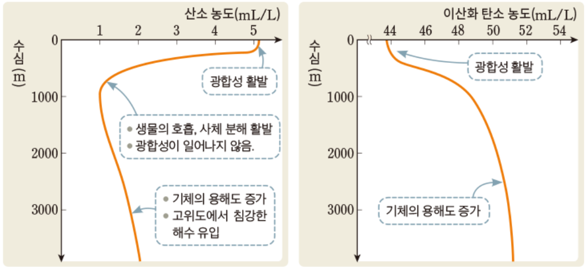
" class="max-h-72 w-auto object-contain rounded-lg group-hover:scale-[1.02] transition duration-300 cursor-zoom-in" onclick="openLightbox(this.src, '교재 그림: <수심에 따른 용존 산소량(O₂)과 용존 이산화 탄소량(CO₂) 분포>')" loading="lazy" />
Interactive Checkpoints
클릭하면 교재 빈칸 정답과 해설이 나타납니다
단원 개념 적용하기 & 확인 문제
Q1
교재 p.5 적용하기: 수온-염분도(T-S도)에서 수괴 A(수온 21℃, 염분 34 psu)와 수괴 C가 1:1로 혼합될 때 생성되는 해수의 위치와 밀도 변화는?
모범 답안 및 해설
두 수괴 A와 C를 직선으로 연결한 선분의 정중앙(중점)에 해당하는 수온과 염분을 갖게 되며, 해당 중점이 위치한 등밀도선 값을 읽어 혼합 해수의 밀도를 파악할 수 있습니다.
Q2
확인 질문: 심해층(수심 2,000m 이하)에서 수심이 깊어질수록 용존 산소량이 다시 증가하는 까닭은 무엇인가?
모범 답안 및 해설
고위도(극지방) 표층의 차갑고 산소가 풍부한 해수가 결빙과 냉각으로 밀도가 커져 심해 바닥으로 침강(심층 순환)하여 심해층에 산소를 공급하기 때문입니다.